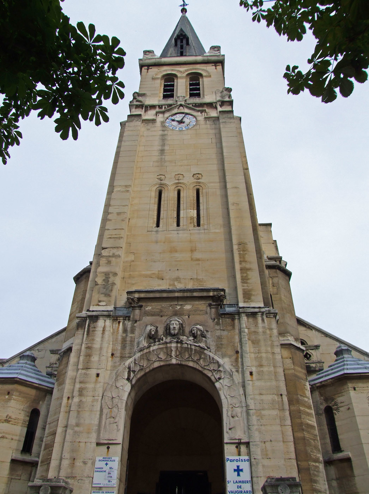
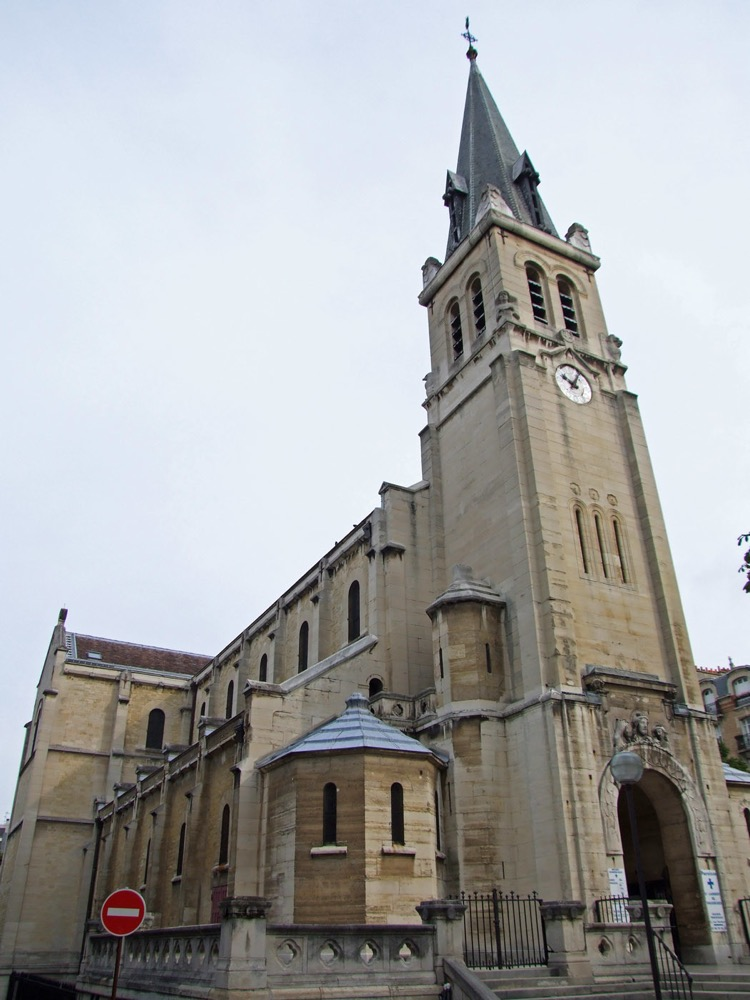

Messes dominicales
- Samedi18h
- Dimanche9h0010h4518h30
À l'église Saint-Lambert.
Paroisse catholique · Paris 15e
Prier en tout temps, se ressourcer auprès du Seigneur et grandir dans la foi, à tout âge. Une communauté vivante, au cœur de Vaugirard.

En images
Horaires
Messes, adoration, confessions et accueil : retrouvez tout ce qu'il faut savoir pour venir à Saint-Lambert.
À l'église Saint-Lambert.
Adoration le jeudi à 19h30.
Un temps de silence et de louange devant le Saint-Sacrement.
À l'église.
2 rue Gerbert
Bureau d'accueil, à droite en entrant par la porte principale. Un prêtre vous accueille (confessions possibles).
Église ouverte tous les jours de 8h à 19h30 (19h en août).

Éditorial
Mt 22, 15-21
Question : qui a inventé la laïcité ? Réponse : c'est Jésus !
La réponse de Jésus au piège tendu par les pharisiens dans l'Évangile d'aujourd'hui a eu une répercussion énorme dans la suite de l'Histoire.
Quel est ce piège ? Payer l'impôt à l'empereur revient à reconnaître l'occupant romain comme légitime, alors que le Messie était censé en libérer. Ne pas le payer expose à être considéré comme un rebelle et à finir sur une croix.
Mais voilà que la réponse nous introduit à une vérité profonde. Si l'on mêle le pouvoir à la foi, alors cette foi devient vite esclave du pouvoir. Le pouvoir cherche bien souvent à passer pour Dieu, à recevoir un culte, ou bien à instrumentaliser Dieu à son profit. Pendant très longtemps, et encore maintenant parfois, cette vérité n'a pas été comprise. Heureusement, le Christ nous libère, y compris par cette parole. Oui, la laïcité ainsi expliquée par Jésus nous rend libre de tout pouvoir, en particulier de ce que chaque pouvoir a, à plus ou moins forte dose, d'illégitime ou d'immoral.
« Rendez à César ce qui est à César, et à Dieu ce qui est à Dieu. » L'effigie et l'inscription sur la pièce de l'impôt sont de César, mais où donc sont l'effigie et l'inscription de Dieu ? Ne sont-elles pas en Jésus Christ, Verbe fait chair, Verbe fait visage ? Mais aussi, nous-mêmes ne sommes-nous pas appelés, comme croyants, à être l'effigie et l'inscription de Dieu dans nos lieux de vie ? Nous portons en effet en nous l'Image et la Ressemblance de Dieu.
Oleg Ouss, diacre
Les grandes étapes
Faire baptiser votre enfant, ou devenir chrétien à l'âge adulte.
En savoir plus →Recevoir le pardon et repartir en paix, à l'église.
En savoir plus →Se marier à l'église et préparer son engagement.
En savoir plus →Être accompagnés dans l'épreuve du deuil par la communauté.
En savoir plus →La vie paroissiale
Prier, apprendre, partager, servir : explorez les propositions de la paroisse.
La paroisse vit grâce à la générosité de tous.
Faire un donActualités
Toute la vie de la paroisse, chaque semaine.
Nous trouver